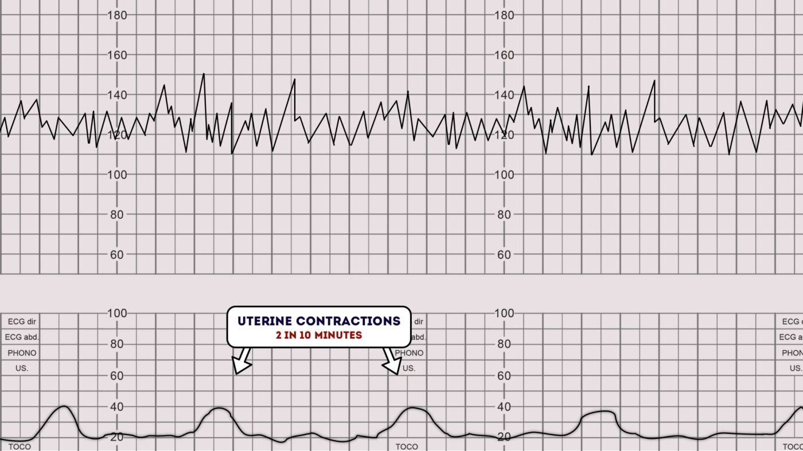
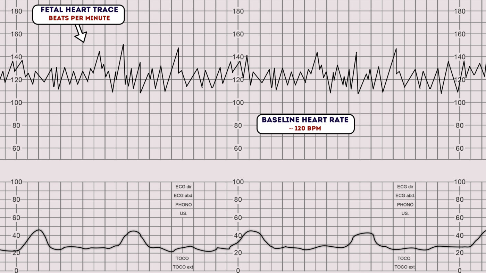
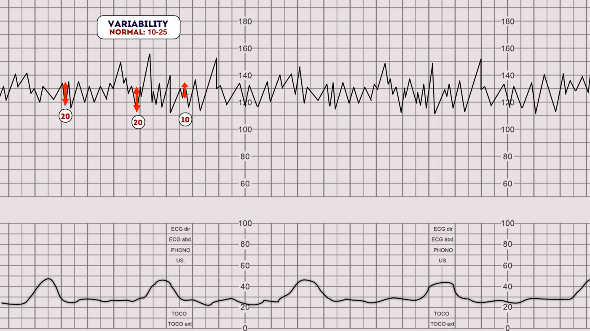
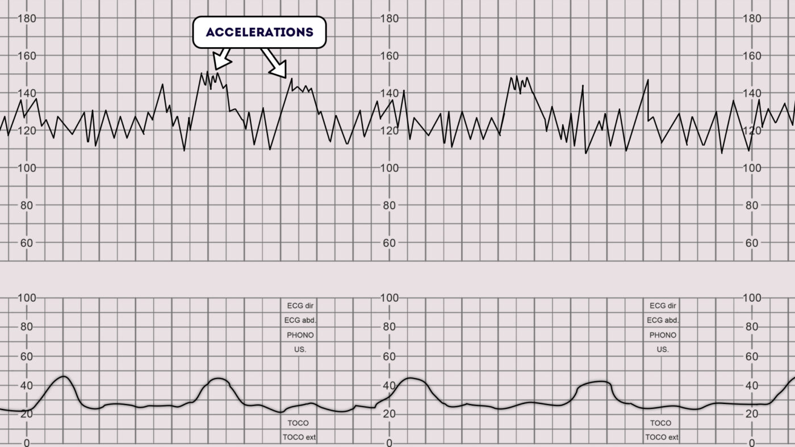
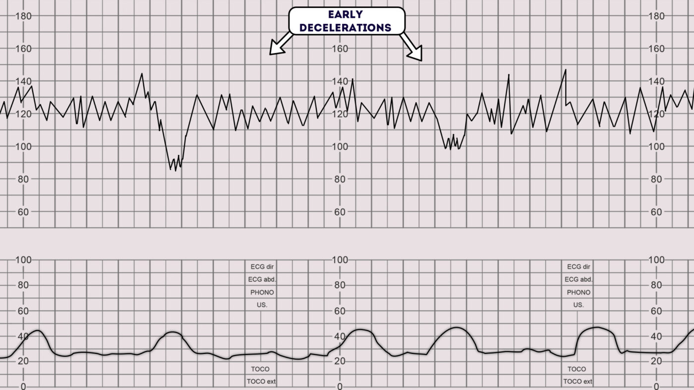
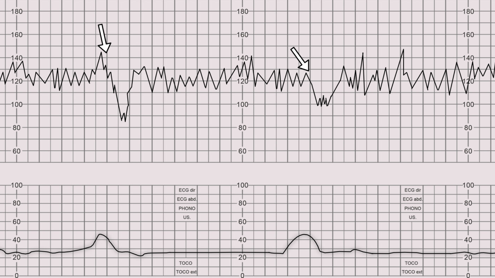
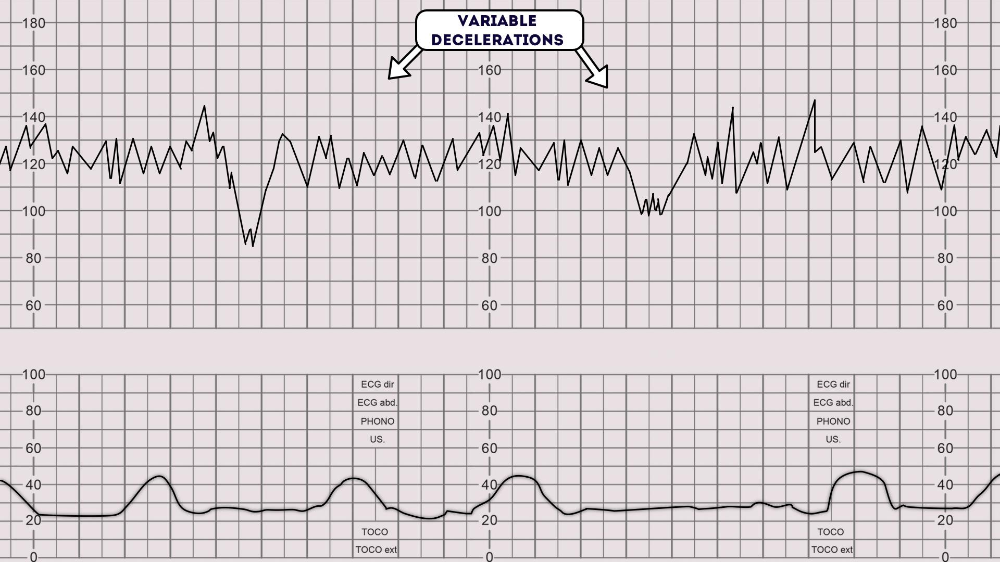
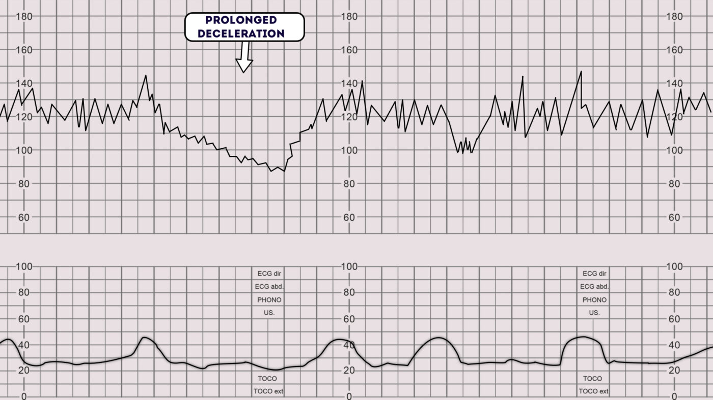
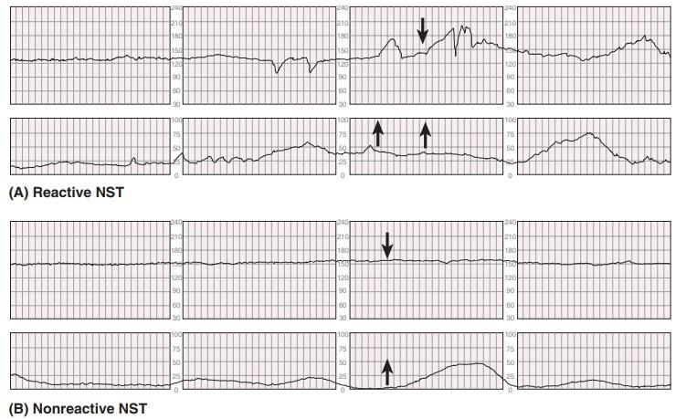

CTG INTERPRETATION
CTG Basics
- With a CTG, you are checking the FHR (fetal heart rate).
- Usually done above 28 weeks if you have any reason to do so.
- There are two types of CTG:
- Non-stress test (NST)
- Contraction stress test (CST)
- Non-stress test (NST)
- The difference is in the N and the C:
- No contractions → NST
- Having contractions → CST
- No contractions → NST
Example
- Lady with no contractions, baby not moving → NST
- Lady in labor with contractions → CST
CTG Graph Components
- Top: Fetal heart rate
- Bottom: Contractions
- NST: bottom part flat
- CST: bottom shows contraction rises
- NST: bottom part flat
Changes in FHR and decelerations are interpreted in relation to contractions.

1. Baseline Fetal Heart Rate
- Average fetal heart rate on the CTG.
- Usually 110–160.
- >160 = tachycardia
- <110 = bradycardia
- Draw an average line through the shakiness.
- Minor up/down beats don’t matter—give the average.

2. Variability
Baseline variability is the minor fluctuation in baseline FHR. It is assessed by estimating the difference in bpm between the highest peak and lowest trough of fluctuation in one minute segments of the trace!.
- Normal variability 6-25 beats per minute
- Reduced variability 3-5 beats per minute
- Absent variability <3 beats per minute
- Increased (salutatory) variability > 25 beats per minute.
You must state:
- Baseline number
- Variability: normal, decreased, or increased

3. Accelerations
- Increase in FHR of >15 beats for >15 seconds
- Not a short-term change
- Anything less than 15 is not an acceleration
- If it lasts more than one block, it’s already >15 seconds
Accelerations are an abrupt increase in the baseline fetal heart rate of greater than 15 bpm for greater than 15 seconds.1
The presence of accelerations is reassuring.
Accelerations occurring alongside uterine contractions is a sign of a healthy fetus.
The absence of accelerations with an otherwise normal CTG is of uncertain significance.
NST Rule
- In a normal NST, you expect at least 2 proper accelerations in 20 minutes
- ">15 beats, >15 seconds"
- ">15 beats, >15 seconds"
- Accelerations are not related to contractions
- Reason: baby moves

4. Decelerations
- Drop in FHR ≥15 beats for ≥15 seconds
- You must state the type:
- Early
- Late
- Variable
- Early
Simply saying “decelerations” is not enough.
Early Decelerations
- Only normal type
- Relation: mirror image of contraction
- Start of contraction = start of deceleration
- Reason: head pressed → vagus nerve → bradycardia
Early decelerations start when the uterine contraction begins and recover when uterine contraction stops. This is due to increased fetal intracranial pressure causing increased vagal tone. It therefore quickly resolves once the uterine contraction ends and intracranial pressure reduces. This type of deceleration is, therefore, considered to be physiological and not pathological

Late Decelerations
- Come late
- Slow onset
- Mid to end of contraction
- Finish after contraction ends
- Suggestive of hypoxia
Late decelerations begin at the peak of the uterine contraction and recover after the contraction ends. This type of deceleration indicates there is insufficient blood flow to the uterus and placenta. As a result, blood flow to the fetus is significantly reduced causing fetal hypoxia and acidosis.
Causes of reduced uteroplacental blood flow include:1
- Maternal hypotension
- Pre-eclampsia
- Uterine hyperstimulation

Variable Decelerations
- Variable timing
- Some early
- Some late
- Some without contractions
- Some early
- Often sharp drop, “V pattern”
- Suggestive of umbilical cord compression
Variable decelerations are observed as a rapid fall in baseline fetal heart rate with a variable recovery phase.
They are variable in their duration and may not have any relationship to uterine contractions.
They are most often seen during labour and in patients’ with reduced amniotic fluid volume.
All fetuses experience stress during the labour process, as a result of uterine contractions reducing fetal perfusion. Whilst fetal stress is to be expected during labour, the challenge is to pick up pathological fetal distress.
Variable decelerations are usually caused by umbilical cord compression. The mechanism is as follows:1
1. The umbilical vein is often occluded first causing an acceleration of the fetal heart rate in response.
2. Then the umbilical artery is occluded causing a subsequent rapid deceleration.
3. When pressure on the cord is reduced another acceleration occurs and then the baseline rate returns.
The accelerations before and after a variable deceleration are known as the shoulders of deceleration. Their presence indicates the fetus is not yet hypoxic and is adapting to the reduced blood flow. Variable decelerations can sometimes resolve if the mother changes position. The presence of persistent variable decelerations indicates the need for close monitoring. Variable decelerations without the shoulders are more worrying, as it suggests the fetus is becoming hypoxic.

Prolonged Decelerations
- FHR goes down and doesn’t come back up
- Not expected in exam
A prolonged deceleration is defined as a deceleration that lasts more than 2 minutes:
- If it lasts between 2-3 minutes it is classed as non-reassuring.
- If it lasts longer than 3 minutes it is immediately classed as abnormal.

Mnemonic: BRAVADO
- BRa = Baseline Rate (FHR)
- Variability
- Accelerations
- Decelerations (type: early, late, variable)
- Overall impression
Overall impression
NST
- Normal NST:
- >2 accelerations in 20 minutes
- >2 accelerations in 20 minutes
- No need to mention positive/negative
- Abnormal NST: no accelerations
CST
- Negative CST = Normal
- No decelerations or only early decelerations
- No decelerations or only early decelerations
- Positive CST = Abnormal
- Late decelerations in >50% of contractions
- Variable decelerations
- Late decelerations in >50% of contractions
Simplified
- Only early decelerations → Normal
- Late or variable → Abnormal
Once you have assessed all aspects of the CTG you need to determine your overall impression.
The overall impression can be described as either reassuring, suspicious or abnormal.3
Overall impression is determined by how many of the CTG features were either reassuring, non-reassuring or abnormal. The NICE guidelines below demonstrate how to decide which category a CTG falls into.3
Reassuring
Baseline heart rate
- 110 to 160 bpm
Baseline variability
- 5 to 25 bpm
Decelerations
- None or early
- Variable decelerations with no concerning characteristics for less than 90 minutes
Non-reassuring
Baseline heart rate
Either of the below would be classed as non-reassuring:
- 100 to 109 bpm
- 161 to 180 bpm
Baseline variability
Either of the below would be classed as non-reassuring:
- Less than 5 for 30 to 50 minutes
- More than 25 for 15 to 25 minutes
Decelerations
Any of the below would be classed as non-reassuring:
- Variable decelerations with no concerning characteristics for 90 minutes or more.
- Variable decelerations with any concerning characteristics in up to 50% of contractions for 30 minutes or more.
- Variable decelerations with any concerning characteristics in over 50% of contractions for less than 30 minutes.
- Late decelerations in over 50% of contractions for less than 30 minutes, with no maternal or fetal clinical risk factors such as vaginal bleeding or significant meconium.
Abnormal
Baseline heart rate
Either of the below would be classed as abnormal:
- Below 100 bpm
- Above 180 bpm
Baseline variability
Any of the below would be classed as abnormal:
- Less than 5 for more than 50 minutes
- More than 25 for more than 25 minutes
- Sinusoidal
Decelerations
Any of the below would be classed as abnormal:
- Variable decelerations with any concerning characteristics in over 50% of contractions for 30 minutes (or less if any maternal or fetal clinical risk factors – see above).
- Late decelerations for 30 minutes (or less if any maternal or fetal clinical risk factors).
- Acute bradycardia, or a single prolonged deceleration lasting 3 minutes or more.
Regard the following as concerning characteristics of variable decelerations:
- Lasting more than 60 seconds
- Reduced baseline variability within the deceleration
- Failure to return to baseline
- Biphasic (W) shape
- No shouldering
Practice Points from Lecture
When baseline is confusing
- Ignore decelerations
- Look outside them to find baseline (e.g., 130–140)
Accelerations after decelerations
- Not accelerations
- Must meet >15 beats, >15 seconds
NST With Decreased Variability and No Accelerations ( Non reactive NST)

- Abnormal NST (non reactive NST)
- Management mentioned:
- Assume baby sleeping
- Repeat NST for another 20 minutes
- If still no accelerations → problem and investigate further
- Assume baby sleeping